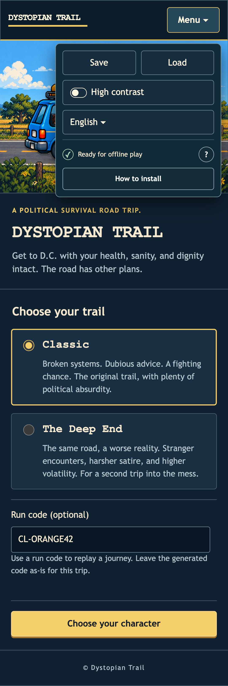
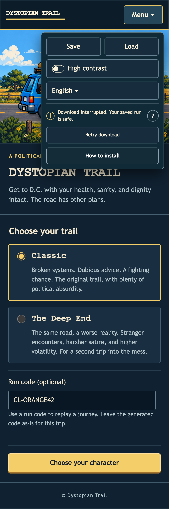
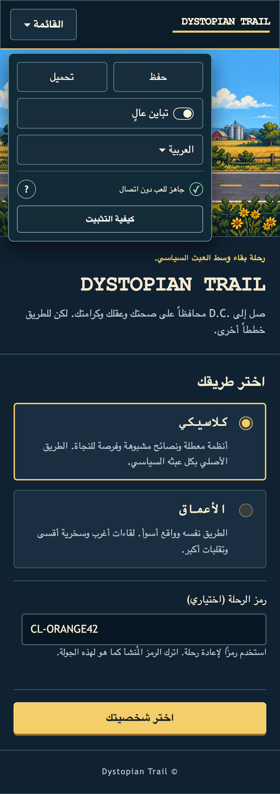
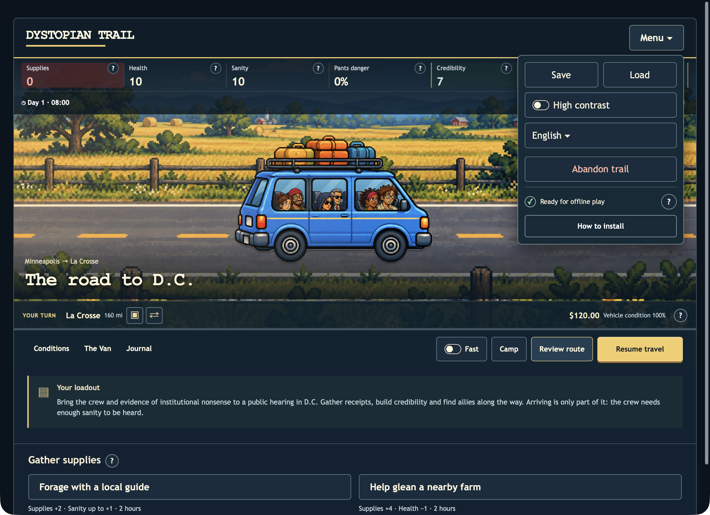

← Implementation reviewOffline controls that fit.
The status spans the menu, help stays centered, and installation has a readable action. Availability, progress, installed state and language changes update the display.
Open preview · Verification
Verified: 8 Chrome cases and 22 native Safari checks.

Ready · phone layout
Interrupted download · display fixture
Language changes update immediatelySafari
